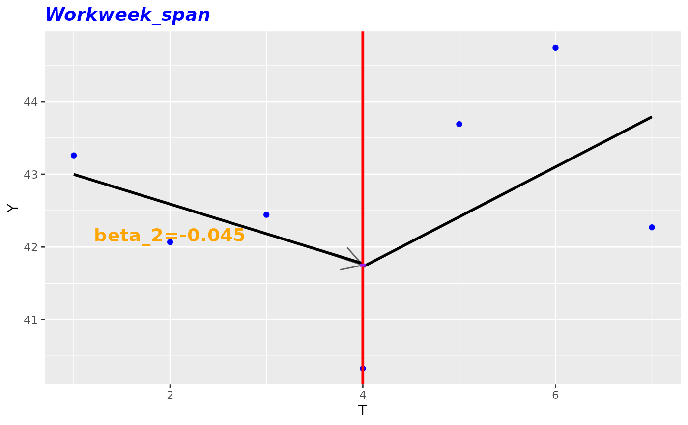

R/create_ITSA.R
create_ITSA.Rdr lifecycle::badge('experimental')
This function implements ITSA method described in the paper 'Conducting interrupted time-series analysis for single- and multiple-group comparisons', Ariel Linden, The Stata Journal (2015), 15, Number 2, pp. 480-500
This function further requires the installation of 'sandwich', 'portes', and
'lmtest' in order to work. These packages can be installed from CRAN using
install.packages().
Person Query as a dataframe including date column named Date.
This function assumes the data format is MM/DD/YYYY as is standard in a
Viva Insights query output.
Start date of 'before' time period in MM/DD/YYYY format as character type. Before time period is the period before the intervention (e.g. training program, re-org, shift to remote work) occurs and bounded by before_start and before_end parameters. Longer period increases likelihood of achieving more statistically significant results. Defaults to earliest date in dataset.
End date of 'before' time period in MM/DD/YYYY format as character type.
Start date of 'after' time period in MM/DD/YYYY format as character type. After time period is the period after the intervention occurs and bounded by after_start and after_end parameters. Longer period increases likelihood of achieving more statistically significant results. Defaults to date after before_end.
End date of 'after' time period in MM/DD/YYYY format as character type. Defaults to latest date in dataset.
maximum lag for autocorrelation test. Default is 7
String specifying what output to return. Defaults to "table". Valid return options include:
'plot': return a list of plots.
'table': return data.frame with estimated models' coefficients and
their corresponding p-values You should look for significant p-values in
beta_2 to indicate an immediate treatment effect, and/or in beta_3 to
indicate a treatment effect over time
This function uses the additional package dependencies 'sandwich' and 'lmtest'. Please install these separately from CRAN prior to running the function.
As of May 2022, the 'portes' package was archived from CRAN. The dependency
has since been removed and dependent functions Ljungbox() incorporated into
the wpa package.
Other Flexible Input:
period_change()
# \donttest{
# Returns summary table
create_ITSA(
data = sq_data,
before_start = "12/15/2019",
before_end = "12/29/2019",
after_start = "1/5/2020",
after_end = "1/26/2020",
ac_lags_max = 7,
return = "table")
#> metric_name beta_2 beta_3 beta_2_pvalue
#> 1 Workweek_span -1 -1 -1
#> 2 Meetings_with_skip_level -1 -1 -1
#> 3 Meeting_hours_with_skip_level -1 -1 -1
#> 4 Generated_workload_email_hours -1 -1 -1
#> 5 Generated_workload_email_recipients -1 -1 -1
#> 6 Generated_workload_instant_messages_hours -1 -1 -1
#> 7 Generated_workload_instant_messages_recipients -1 -1 -1
#> 8 Generated_workload_call_hours -1 -1 -1
#> 9 Generated_workload_call_participants -1 -1 -1
#> 10 Generated_workload_calls_organized -1 -1 -1
#> 11 External_network_size -1 -1 -1
#> 12 Internal_network_size -1 -1 -1
#> 13 Networking_outside_company -1 -1 -1
#> 14 Networking_outside_organization -1 -1 -1
#> 15 After_hours_meeting_hours -1 -1 -1
#> 16 Open_1_hour_block -1 -1 -1
#> 17 Open_2_hour_blocks -1 -1 -1
#> 18 Total_focus_hours -1 -1 -1
#> 19 Low_quality_meeting_hours -1 -1 -1
#> 20 Total_emails_sent_during_meeting -1 -1 -1
#> 21 Meetings -1 -1 -1
#> 22 Meeting_hours -1 -1 -1
#> 23 Conflicting_meeting_hours -1 -1 -1
#> 24 Multitasking_meeting_hours -1 -1 -1
#> 25 Redundant_meeting_hours__lower_level_ -1 -1 -1
#> 26 Redundant_meeting_hours__organizational_ -1 -1 -1
#> 27 Time_in_self_organized_meetings -1 -1 -1
#> 28 Meeting_hours_during_working_hours -1 -1 -1
#> 29 Generated_workload_meeting_attendees -1 -1 -1
#> 30 Generated_workload_meeting_hours -1 -1 -1
#> 31 Generated_workload_meetings_organized -1 -1 -1
#> 32 Manager_coaching_hours_1_on_1 -1 -1 -1
#> 33 Meetings_with_manager -1 -1 -1
#> 34 Meeting_hours_with_manager -1 -1 -1
#> 35 Meetings_with_manager_1_on_1 -1 -1 -1
#> 36 Meeting_hours_with_manager_1_on_1 -1 -1 -1
#> 37 After_hours_email_hours -1 -1 -1
#> 38 Emails_sent -1 -1 -1
#> 39 Email_hours -1 -1 -1
#> 40 Working_hours_email_hours -1 -1 -1
#> 41 After_hours_instant_messages -1 -1 -1
#> 42 Instant_messages_sent -1 -1 -1
#> 43 Instant_Message_hours -1 -1 -1
#> 44 Working_hours_instant_messages -1 -1 -1
#> 45 After_hours_collaboration_hours -1 -1 -1
#> 46 Collaboration_hours -1 -1 -1
#> 47 Collaboration_hours_external -1 -1 -1
#> 48 Working_hours_collaboration_hours -1 -1 -1
#> 49 After_hours_in_calls -1 -1 -1
#> 50 Total_calls -1 -1 -1
#> 51 Call_hours -1 -1 -1
#> 52 Working_hours_in_calls -1 -1 -1
#> 53 Layer -1 -1 -1
#> 54 HourlyRate -1 -1 -1
#> beta_3_pvalue AR_flag
#> 1 -1 FALSE
#> 2 -1 FALSE
#> 3 -1 FALSE
#> 4 -1 FALSE
#> 5 -1 FALSE
#> 6 -1 FALSE
#> 7 -1 FALSE
#> 8 -1 FALSE
#> 9 -1 FALSE
#> 10 -1 FALSE
#> 11 -1 FALSE
#> 12 -1 FALSE
#> 13 -1 FALSE
#> 14 -1 FALSE
#> 15 -1 FALSE
#> 16 -1 FALSE
#> 17 -1 FALSE
#> 18 -1 FALSE
#> 19 -1 FALSE
#> 20 -1 FALSE
#> 21 -1 FALSE
#> 22 -1 FALSE
#> 23 -1 FALSE
#> 24 -1 FALSE
#> 25 -1 FALSE
#> 26 -1 FALSE
#> 27 -1 FALSE
#> 28 -1 FALSE
#> 29 -1 FALSE
#> 30 -1 FALSE
#> 31 -1 FALSE
#> 32 -1 FALSE
#> 33 -1 FALSE
#> 34 -1 FALSE
#> 35 -1 FALSE
#> 36 -1 FALSE
#> 37 -1 FALSE
#> 38 -1 FALSE
#> 39 -1 FALSE
#> 40 -1 FALSE
#> 41 -1 FALSE
#> 42 -1 FALSE
#> 43 -1 FALSE
#> 44 -1 FALSE
#> 45 -1 FALSE
#> 46 -1 FALSE
#> 47 -1 FALSE
#> 48 -1 FALSE
#> 49 -1 FALSE
#> 50 -1 FALSE
#> 51 -1 FALSE
#> 52 -1 FALSE
#> 53 -1 FALSE
#> 54 -1 FALSE
#> error_warning
#> 1 Error: Maximum value of arguments lags * season can't exceed n!; lm_train_success=TRUE
#> 2 Error: Maximum value of arguments lags * season can't exceed n!; lm_train_success=TRUE
#> 3 Error: Maximum value of arguments lags * season can't exceed n!; lm_train_success=TRUE
#> 4 Error: Maximum value of arguments lags * season can't exceed n!; lm_train_success=TRUE
#> 5 Error: Maximum value of arguments lags * season can't exceed n!; lm_train_success=TRUE
#> 6 Error: Maximum value of arguments lags * season can't exceed n!; lm_train_success=TRUE
#> 7 Error: Maximum value of arguments lags * season can't exceed n!; lm_train_success=TRUE
#> 8 Error: Maximum value of arguments lags * season can't exceed n!; lm_train_success=TRUE
#> 9 Error: Maximum value of arguments lags * season can't exceed n!; lm_train_success=TRUE
#> 10 Error: Maximum value of arguments lags * season can't exceed n!; lm_train_success=TRUE
#> 11 Error: Maximum value of arguments lags * season can't exceed n!; lm_train_success=TRUE
#> 12 Error: Maximum value of arguments lags * season can't exceed n!; lm_train_success=TRUE
#> 13 Error: Maximum value of arguments lags * season can't exceed n!; lm_train_success=TRUE
#> 14 Error: Maximum value of arguments lags * season can't exceed n!; lm_train_success=TRUE
#> 15 Error: Maximum value of arguments lags * season can't exceed n!; lm_train_success=TRUE
#> 16 Error: Maximum value of arguments lags * season can't exceed n!; lm_train_success=TRUE
#> 17 Error: Maximum value of arguments lags * season can't exceed n!; lm_train_success=TRUE
#> 18 Error: Maximum value of arguments lags * season can't exceed n!; lm_train_success=TRUE
#> 19 Error: Maximum value of arguments lags * season can't exceed n!; lm_train_success=TRUE
#> 20 Error: Maximum value of arguments lags * season can't exceed n!; lm_train_success=TRUE
#> 21 Error: Maximum value of arguments lags * season can't exceed n!; lm_train_success=TRUE
#> 22 Error: Maximum value of arguments lags * season can't exceed n!; lm_train_success=TRUE
#> 23 Error: Maximum value of arguments lags * season can't exceed n!; lm_train_success=TRUE
#> 24 Error: Maximum value of arguments lags * season can't exceed n!; lm_train_success=TRUE
#> 25 Error: Maximum value of arguments lags * season can't exceed n!; lm_train_success=TRUE
#> 26 Error: Maximum value of arguments lags * season can't exceed n!; lm_train_success=TRUE
#> 27 Error: Maximum value of arguments lags * season can't exceed n!; lm_train_success=TRUE
#> 28 Error: Maximum value of arguments lags * season can't exceed n!; lm_train_success=TRUE
#> 29 Error: Maximum value of arguments lags * season can't exceed n!; lm_train_success=TRUE
#> 30 Error: Maximum value of arguments lags * season can't exceed n!; lm_train_success=TRUE
#> 31 Error: Maximum value of arguments lags * season can't exceed n!; lm_train_success=TRUE
#> 32 Error: Maximum value of arguments lags * season can't exceed n!; lm_train_success=TRUE
#> 33 Error: Maximum value of arguments lags * season can't exceed n!; lm_train_success=TRUE
#> 34 Error: Maximum value of arguments lags * season can't exceed n!; lm_train_success=TRUE
#> 35 Error: Maximum value of arguments lags * season can't exceed n!; lm_train_success=TRUE
#> 36 Error: Maximum value of arguments lags * season can't exceed n!; lm_train_success=TRUE
#> 37 Error: Maximum value of arguments lags * season can't exceed n!; lm_train_success=TRUE
#> 38 Error: Maximum value of arguments lags * season can't exceed n!; lm_train_success=TRUE
#> 39 Error: Maximum value of arguments lags * season can't exceed n!; lm_train_success=TRUE
#> 40 Error: Maximum value of arguments lags * season can't exceed n!; lm_train_success=TRUE
#> 41 Error: Maximum value of arguments lags * season can't exceed n!; lm_train_success=TRUE
#> 42 Error: Maximum value of arguments lags * season can't exceed n!; lm_train_success=TRUE
#> 43 Error: Maximum value of arguments lags * season can't exceed n!; lm_train_success=TRUE
#> 44 Error: Maximum value of arguments lags * season can't exceed n!; lm_train_success=TRUE
#> 45 Error: Maximum value of arguments lags * season can't exceed n!; lm_train_success=TRUE
#> 46 Error: Maximum value of arguments lags * season can't exceed n!; lm_train_success=TRUE
#> 47 Error: Maximum value of arguments lags * season can't exceed n!; lm_train_success=TRUE
#> 48 Error: Maximum value of arguments lags * season can't exceed n!; lm_train_success=TRUE
#> 49 Error: Maximum value of arguments lags * season can't exceed n!; lm_train_success=TRUE
#> 50 Error: Maximum value of arguments lags * season can't exceed n!; lm_train_success=TRUE
#> 51 Error: Maximum value of arguments lags * season can't exceed n!; lm_train_success=TRUE
#> 52 Error: Maximum value of arguments lags * season can't exceed n!; lm_train_success=TRUE
#> 53 Warning: essentially perfect fit: summary may be unreliable; lm_train_success=FALSE
#> 54 Warning: essentially perfect fit: summary may be unreliable; lm_train_success=FALSE
# Returns list of plots
plot_list <-
create_ITSA(
data = sq_data,
before_start = "12/15/2019",
before_end = "12/29/2019",
after_start = "1/5/2020",
after_end = "1/26/2020",
ac_lags_max = 7,
return = 'plot')
#> Warning: Using `size` aesthetic for lines was deprecated in ggplot2 3.4.0.
#> ℹ Please use `linewidth` instead.
#> ℹ The deprecated feature was likely used in the wpa package.
#> Please report the issue at <https://github.com/microsoft/wpa/issues/>.
# Extract a plot as an example
plot_list$Workweek_span

# }